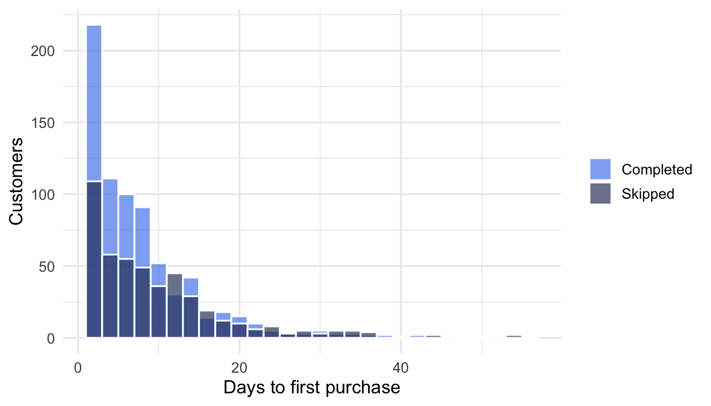
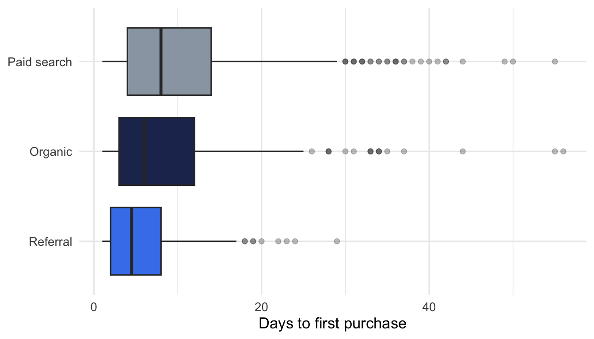

Code
shapiro.test(x)Wlademir Ribeiro Prates
October 6, 2026
Every company runs on beliefs. “Customers who finish onboarding stick around longer.” “The new checkout converts better.” “Support is slower in one region.” Most of these beliefs are checked with a pivot table, a bar chart and a nod. That works until two averages look different and nobody can say whether the difference is real or noise.
Hypothesis tests exist for exactly that moment. They are not an academic ritual: they are the cheapest tool you have to say, with a known margin of error, whether a difference you see in the data would survive another sample. This post is the path I use to go from a business belief to the right test, with a worked example in R.
The structure comes from a chapter I wrote for O Manual do Cientista de Dados, my open handbook in Portuguese. This is the English version, rewritten around a single example.
Steps 1 and 5 are where most of the value is. Steps 2 to 4 are where most of the mistakes are. The decision flow below is for those three.
Every test needs a null hypothesis (\(H_0\)), which always states an equality, and an alternative (\(H_1\)), which states what you suspect instead.
Use a one-sided alternative only when the opposite direction would be irrelevant to the decision. When in doubt, go two-sided.
The output of a test is a decision: reject \(H_0\) or fail to reject \(H_0\). The p-value is the probability of seeing a difference at least as large as the one observed if \(H_0\) were true. A small p-value is evidence against \(H_0\). The usual threshold is 0.05, sometimes 0.10 in exploratory work. The threshold is a convention, not a law of nature, and it should be set before looking at the result.
Parametric tests assume the data follow a known distribution, usually the normal. Non-parametric tests do not. In business data, non-parametric tests are often the safer default: metrics like revenue, time and counts are skewed, and samples are frequently small.
A quick check is the Shapiro-Wilk test, whose \(H_0\) is “the data are normal”. If its p-value is below 0.05, treat the data as non-normal and pick the non-parametric branch.
Paired samples measure the same unit twice, such as the same customer before and after a change. Unpaired samples come from different units in different groups. Paired tests need samples of equal size, matched row by row. Unpaired tests do not.
Two questions decide almost everything: what type of data are you comparing, and how many groups are there?
flowchart TD
Start{{"What type of data?"}}
Start -->|CONTINUOUS| Groups{{"How many groups?"}}
Start -->|CATEGORICAL| Prop["Difference in<br/>proportions"]
Groups -->|1| G1["One sample vs<br/>a reference value"]
Groups -->|2| G2["Two samples"]
Groups -->|3+| G3["Three or more"]
G1 --> T1["One-sample t-test"]
G1 --> W1["Wilcoxon<br/>signed rank"]
G2 --> T2["Two-sample t-test"]
G2 --> W2["Wilcoxon rank sum<br/>(Mann-Whitney)"]
G3 --> ANOVA["ANOVA"]
G3 --> KW["Kruskal-Wallis"]
KW -->|"Which groups differ?"| Post["Pairwise Wilcoxon<br/>or Dunn test"]
Prop --> Z["Z-test"]
Prop --> Chi["Chi-squared"]
Chi -->|"Ordered groups?"| Trend["Chi-squared<br/>for trend"]
style T1 fill:#fff3bf,stroke:#f0b429
style T2 fill:#fff3bf,stroke:#f0b429
style ANOVA fill:#fff3bf,stroke:#f0b429
style Z fill:#fff3bf,stroke:#f0b429
style W1 fill:#e9ecef,stroke:#adb5bd
style W2 fill:#e9ecef,stroke:#adb5bd
style KW fill:#e9ecef,stroke:#adb5bd
style Post fill:#e9ecef,stroke:#adb5bd
style Chi fill:#e9ecef,stroke:#adb5bd
style Trend fill:#e9ecef,stroke:#adb5bd
Yellow boxes are parametric tests, grey boxes are non-parametric. Within each branch, the normality check decides which one to use.
Imagine a subscription product. The team has three beliefs they want to settle before the quarterly review. The data below are simulated, so the numbers are not from any real company, but the shapes are the ones you meet in practice: skewed times and conversion rates in the single digits.
set.seed(2026)
n <- 1200
customers <- tibble(
id = seq_len(n),
channel = sample(c("Paid search", "Organic", "Referral"), n,
replace = TRUE, prob = c(0.45, 0.35, 0.20)),
onboarding = sample(c("Completed", "Skipped"), n,
replace = TRUE, prob = c(0.6, 0.4))
) |>
mutate(
# Days until first purchase: skewed, shorter with onboarding and for referrals
base_rate = case_when(
channel == "Referral" ~ 1 / 6,
channel == "Organic" ~ 1 / 9,
TRUE ~ 1 / 11
),
days_to_first_purchase = round(
rexp(n, rate = if_else(onboarding == "Completed", base_rate * 1.35, base_rate)) + 1
)
) |>
select(-base_rate)
glimpse(customers)Rows: 1,200
Columns: 4
$ id <int> 1, 2, 3, 4, 5, 6, 7, 8, 9, 10, 11, 12, 13, 14, …
$ channel <chr> "Organic", "Organic", "Paid search", "Paid sear…
$ onboarding <chr> "Skipped", "Completed", "Completed", "Completed…
$ days_to_first_purchase <dbl> 3, 7, 7, 7, 5, 12, 2, 8, 42, 2, 9, 20, 1, 4, 5,…The team ran an A/B test on the checkout page. Each visitor saw either the old or the new version and either converted or did not. Two groups, a yes/no outcome: this is the categorical branch, difference in proportions.
# A tibble: 2 × 4
variant visitors conversions rate
<chr> <dbl> <dbl> <dbl>
1 Old 4180 301 0.0720
2 New 4210 352 0.0836
2-sample test for equality of proportions with continuity correction
data: checkout$conversions out of checkout$visitors
X-squared = 3.773, df = 1, p-value = 0.05209
alternative hypothesis: two.sided
95 percent confidence interval:
-2.329896e-02 9.719229e-05
sample estimates:
prop 1 prop 2
0.07200957 0.08361045 The new checkout converts at 8.4% against 7.2%, a lift of 1.2 percentage points, and the p-value is 0.052. If the team set the threshold at 0.05 before the test, the honest reading is: we do not reject \(H_0\) yet. The confidence interval of the difference runs from about -2.3 points to just above zero, which says the same thing: the data are compatible with a real gain and with no gain at all.
This is the most common outcome in real A/B tests and the one most often misreported. Two things not to do: move the threshold to 0.10 after seeing the result, or declare the test “a trend”. The right move is to decide what difference would matter for the business (say, one percentage point) and keep the test running until the sample can detect it. Had the result come in at 0.03, the next question would be the size of the lift and whether it pays for the engineering cost, not the p-value itself.
Here the outcome is continuous (days until first purchase) and there are two groups (completed or skipped onboarding). The groups are different customers, so the samples are unpaired.

The distributions are clearly skewed: most customers buy in the first days and a long tail takes weeks. The normality check confirms what the plot already shows.
# A tibble: 2 × 5
onboarding n median_days mean_days shapiro_p
<chr> <int> <dbl> <dbl> <dbl>
1 Completed 732 6 8.19 1.84e-28
2 Skipped 468 8 10.3 1.02e-22Both p-values are far below 0.05, so the data are not normal and we take the non-parametric branch: Wilcoxon rank sum, also known as Mann-Whitney U.
Wilcoxon rank sum test with continuity correction
data: days_to_first_purchase by onboarding
W = 145846, p-value = 6.661e-06
alternative hypothesis: true location shift is less than 0\(H_0\) is rejected. Had we used a t-test, we would probably have reached the same conclusion with this sample size, but with smaller samples the skew would have hurt the t-test first. With the Wilcoxon test the conclusion does not depend on the shape of the tail.
Same continuous outcome, now three groups. Non-normal data again, so the choice is Kruskal-Wallis.
# A tibble: 3 × 3
channel n median_days
<chr> <int> <dbl>
1 Referral 228 4.5
2 Organic 440 6
3 Paid search 532 8
Kruskal-Wallis rank sum test
data: days_to_first_purchase by factor(channel)
Kruskal-Wallis chi-squared = 46.437, df = 2, p-value = 8.249e-11Kruskal-Wallis only says that at least one channel is different. The question the team actually cares about is which one, and that requires pairwise comparisons with a correction for testing several pairs at once.
Pairwise comparisons using Wilcoxon rank sum test with continuity correction
data: customers$days_to_first_purchase and customers$channel
Organic Paid search
Paid search 0.0037 -
Referral 2.2e-05 4.4e-11
P value adjustment method: holm 
All three pairs differ after the Holm correction, and the medians tell the direction: referral customers buy soonest, paid search slowest, organic in between. The sentence for the quarterly review is “half of referral customers buy within five days, against eight days for paid search”, not the Kruskal-Wallis statistic.
| Question | Data | Groups | Parametric | Non-parametric | R |
|---|---|---|---|---|---|
| Is a rate different between groups? | Categorical | 2+ | Z-test | Chi-squared, Fisher | prop.test(), chisq.test(), fisher.test() |
| Is a metric different from a target? | Continuous | 1 | One-sample t-test | Wilcoxon signed rank | t.test(x, mu =), wilcox.test(x, mu =) |
| Is a metric different between two groups? | Continuous | 2 | Two-sample t-test | Wilcoxon rank sum | t.test(x, y), wilcox.test(x, y) |
| Before vs after on the same units? | Continuous | 2 paired | Paired t-test | Wilcoxon signed rank | t.test(x, y, paired = TRUE), wilcox.test(x, y, paired = TRUE) |
| Is a metric different across 3+ groups? | Continuous | 3+ | ANOVA | Kruskal-Wallis | aov(), kruskal.test() |
| Which groups differ? | Continuous | 3+ | Tukey HSD | Pairwise Wilcoxon, Dunn | TukeyHSD(), pairwise.wilcox.test() |
prop.test, wilcox.test, kruskal.test and pairwise.wilcox.test.A natural follow-up is power analysis: how to decide, before an A/B test starts, how many visitors you need so that a failure to reject \(H_0\) actually means something. That is the next post in this series.
---
title: "Which hypothesis test should I use? A decision flow for business questions"
description: "A practical path from a business belief to a statistical test: how to choose between t-test, Wilcoxon, ANOVA, Kruskal-Wallis and proportion tests, with a worked example in R."
author: "Wlademir Ribeiro Prates"
date: "2026-10-06"
categories: [Statistics, Data Science]
image: preview.png
draft: true
format:
html:
include-after-body: disqus.html
mermaid:
theme: neutral
---
```{r}
#| include: false
library(dplyr)
library(ggplot2)
theme_set(theme_minimal(base_size = 13))
pal <- c("#4582ec", "#22325e", "#9aa5b1")
```
Every company runs on beliefs. "Customers who finish onboarding stick around longer." "The new checkout converts better." "Support is slower in one region." Most of these beliefs are checked with a pivot table, a bar chart and a nod. That works until two averages look different and nobody can say whether the difference is real or noise.
Hypothesis tests exist for exactly that moment. They are not an academic ritual: they are the cheapest tool you have to say, with a known margin of error, whether a difference you see in the data would survive another sample. This post is the path I use to go from a business belief to the right test, with a worked example in R.
## What you need
- Comfortable reading R. Every chunk is runnable, with simulated data, so nothing depends on private datasets.
- No statistics beyond the idea of an average and a distribution. The concepts you need are in the next section.
The structure comes from a chapter I wrote for [O Manual do Cientista de Dados](https://wrprates.github.io/o-manual-do-cientista-de-dados/teste_de_hipoteses.html), my open handbook in Portuguese. This is the English version, rewritten around a single example.
## The five steps
1. **State the business hypothesis** in plain words.
2. **Translate it into a statistical hypothesis**: a null and an alternative.
3. **Choose the test** based on the type of data and the number of groups.
4. **Shape the data** into what the test expects.
5. **Run the test and read the result** in business terms, not only in p-values.
Steps 1 and 5 are where most of the value is. Steps 2 to 4 are where most of the mistakes are. The decision flow below is for those three.
## Four concepts before choosing
### Null and alternative hypotheses
Every test needs a **null hypothesis** ($H_0$), which always states an equality, and an **alternative** ($H_1$), which states what you suspect instead.
- $H_0$: average time to first purchase is the same with and without onboarding.
- $H_1$: it is different (two-sided), or it is shorter with onboarding (one-sided).
Use a one-sided alternative only when the opposite direction would be irrelevant to the decision. When in doubt, go two-sided.
### The decision and the p-value
The output of a test is a decision: **reject $H_0$** or **fail to reject $H_0$**. The p-value is the probability of seeing a difference at least as large as the one observed if $H_0$ were true. A small p-value is evidence against $H_0$. The usual threshold is 0.05, sometimes 0.10 in exploratory work. The threshold is a convention, not a law of nature, and it should be set before looking at the result.
### Parametric or non-parametric
**Parametric** tests assume the data follow a known distribution, usually the normal. **Non-parametric** tests do not. In business data, non-parametric tests are often the safer default: metrics like revenue, time and counts are skewed, and samples are frequently small.
A quick check is the Shapiro-Wilk test, whose $H_0$ is "the data are normal". If its p-value is below 0.05, treat the data as non-normal and pick the non-parametric branch.
```{r}
#| eval: false
shapiro.test(x)
```
### Paired or unpaired
**Paired** samples measure the same unit twice, such as the same customer before and after a change. **Unpaired** samples come from different units in different groups. Paired tests need samples of equal size, matched row by row. Unpaired tests do not.
## The decision flow
Two questions decide almost everything: what type of data are you comparing, and how many groups are there?
```{mermaid}
%%| fig-width: 9
flowchart TD
Start{{"What type of data?"}}
Start -->|CONTINUOUS| Groups{{"How many groups?"}}
Start -->|CATEGORICAL| Prop["Difference in<br/>proportions"]
Groups -->|1| G1["One sample vs<br/>a reference value"]
Groups -->|2| G2["Two samples"]
Groups -->|3+| G3["Three or more"]
G1 --> T1["One-sample t-test"]
G1 --> W1["Wilcoxon<br/>signed rank"]
G2 --> T2["Two-sample t-test"]
G2 --> W2["Wilcoxon rank sum<br/>(Mann-Whitney)"]
G3 --> ANOVA["ANOVA"]
G3 --> KW["Kruskal-Wallis"]
KW -->|"Which groups differ?"| Post["Pairwise Wilcoxon<br/>or Dunn test"]
Prop --> Z["Z-test"]
Prop --> Chi["Chi-squared"]
Chi -->|"Ordered groups?"| Trend["Chi-squared<br/>for trend"]
style T1 fill:#fff3bf,stroke:#f0b429
style T2 fill:#fff3bf,stroke:#f0b429
style ANOVA fill:#fff3bf,stroke:#f0b429
style Z fill:#fff3bf,stroke:#f0b429
style W1 fill:#e9ecef,stroke:#adb5bd
style W2 fill:#e9ecef,stroke:#adb5bd
style KW fill:#e9ecef,stroke:#adb5bd
style Post fill:#e9ecef,stroke:#adb5bd
style Chi fill:#e9ecef,stroke:#adb5bd
style Trend fill:#e9ecef,stroke:#adb5bd
```
Yellow boxes are parametric tests, grey boxes are non-parametric. Within each branch, the normality check decides which one to use.
## A worked example: three questions from one product team
Imagine a subscription product. The team has three beliefs they want to settle before the quarterly review. The data below are simulated, so the numbers are not from any real company, but the shapes are the ones you meet in practice: skewed times and conversion rates in the single digits.
```{r}
set.seed(2026)
n <- 1200
customers <- tibble(
id = seq_len(n),
channel = sample(c("Paid search", "Organic", "Referral"), n,
replace = TRUE, prob = c(0.45, 0.35, 0.20)),
onboarding = sample(c("Completed", "Skipped"), n,
replace = TRUE, prob = c(0.6, 0.4))
) |>
mutate(
# Days until first purchase: skewed, shorter with onboarding and for referrals
base_rate = case_when(
channel == "Referral" ~ 1 / 6,
channel == "Organic" ~ 1 / 9,
TRUE ~ 1 / 11
),
days_to_first_purchase = round(
rexp(n, rate = if_else(onboarding == "Completed", base_rate * 1.35, base_rate)) + 1
)
) |>
select(-base_rate)
glimpse(customers)
```
### Question 1: did the redesigned checkout change conversion?
The team ran an A/B test on the checkout page. Each visitor saw either the old or the new version and either converted or did not. Two groups, a yes/no outcome: this is the **categorical** branch, difference in proportions.
```{r}
checkout <- tibble(
variant = c("Old", "New"),
visitors = c(4180, 4210),
conversions = c(301, 352)
) |>
mutate(rate = conversions / visitors)
checkout
```
- $H_0$: the conversion rate is the same in both variants.
- $H_1$: the conversion rates differ.
```{r}
prop.test(x = checkout$conversions, n = checkout$visitors)
```
The new checkout converts at 8.4% against 7.2%, a lift of 1.2 percentage points, and the p-value is 0.052. If the team set the threshold at 0.05 before the test, the honest reading is: **we do not reject $H_0$ yet**. The confidence interval of the difference runs from about -2.3 points to just above zero, which says the same thing: the data are compatible with a real gain and with no gain at all.
This is the most common outcome in real A/B tests and the one most often misreported. Two things not to do: move the threshold to 0.10 after seeing the result, or declare the test "a trend". The right move is to decide what difference would matter for the business (say, one percentage point) and keep the test running until the sample can detect it. Had the result come in at 0.03, the next question would be the size of the lift and whether it pays for the engineering cost, not the p-value itself.
### Question 2: do customers who complete onboarding buy sooner?
Here the outcome is **continuous** (days until first purchase) and there are **two groups** (completed or skipped onboarding). The groups are different customers, so the samples are unpaired.
```{r}
#| fig-height: 4
ggplot(customers, aes(days_to_first_purchase, fill = onboarding)) +
geom_histogram(binwidth = 2, position = "identity", alpha = 0.65, colour = "white") +
scale_fill_manual(values = pal[1:2]) +
labs(x = "Days to first purchase", y = "Customers", fill = NULL)
```
The distributions are clearly skewed: most customers buy in the first days and a long tail takes weeks. The normality check confirms what the plot already shows.
```{r}
customers |>
group_by(onboarding) |>
summarise(
n = n(),
median_days = median(days_to_first_purchase),
mean_days = mean(days_to_first_purchase),
shapiro_p = shapiro.test(days_to_first_purchase)$p.value
)
```
Both p-values are far below 0.05, so the data are not normal and we take the non-parametric branch: **Wilcoxon rank sum**, also known as Mann-Whitney U.
- $H_0$: the distributions of days to first purchase are the same in both groups.
- $H_1$: customers who completed onboarding buy sooner (one-sided, because a slower result would not change the decision to keep onboarding).
```{r}
wilcox.test(
days_to_first_purchase ~ onboarding,
data = customers,
alternative = "less"
)
```
$H_0$ is rejected. Had we used a t-test, we would probably have reached the same conclusion with this sample size, but with smaller samples the skew would have hurt the t-test first. With the Wilcoxon test the conclusion does not depend on the shape of the tail.
### Question 3: does time to first purchase differ across acquisition channels?
Same continuous outcome, now **three groups**. Non-normal data again, so the choice is **Kruskal-Wallis**.
- $H_0$: the three channels have the same distribution of days to first purchase.
- $H_1$: at least one channel differs.
```{r}
customers |>
group_by(channel) |>
summarise(n = n(), median_days = median(days_to_first_purchase)) |>
arrange(median_days)
kruskal.test(days_to_first_purchase ~ factor(channel), data = customers)
```
Kruskal-Wallis only says that *at least one* channel is different. The question the team actually cares about is *which* one, and that requires pairwise comparisons with a correction for testing several pairs at once.
```{r}
pairwise.wilcox.test(
customers$days_to_first_purchase,
customers$channel,
p.adjust.method = "holm"
)
```
```{r}
#| fig-height: 4
customers |>
mutate(channel = reorder(channel, days_to_first_purchase, median)) |>
ggplot(aes(channel, days_to_first_purchase, fill = channel)) +
geom_boxplot(outlier.alpha = 0.3, show.legend = FALSE) +
scale_fill_manual(values = pal) +
coord_flip() +
labs(x = NULL, y = "Days to first purchase")
```
All three pairs differ after the Holm correction, and the medians tell the direction: referral customers buy soonest, paid search slowest, organic in between. The sentence for the quarterly review is "half of referral customers buy within five days, against eight days for paid search", not the Kruskal-Wallis statistic.
## Reading results without fooling yourself
- **Significant is not the same as important.** With 1,200 customers, tiny differences become significant. Always report the size of the effect in business units: days, percentage points, revenue.
- **The threshold comes first.** Decide 0.05 or 0.10 before running the test. Moving it after seeing the p-value, as would be tempting with the 0.052 in question 1, is the most common way to lie to yourself.
- **Independence matters more than normality.** Repeated measurements of the same customer, or customers who influence each other, break every test in this post. Non-parametric tests do not fix that.
- **Many tests, many false positives.** If you test ten beliefs at 0.05, you expect one false positive. Correct for multiple comparisons, as done in question 3, or at least say how many tests you ran.
- **A test answers one narrow question.** It says whether a difference is likely to be noise. It does not say why the difference exists, and it does not say the new checkout *caused* the lift unless the assignment was random.
## Limitations of this guide
- The flow covers the tests that solve most business questions, not all tests. Correlation, regression and time-series questions need other tools.
- It does not cover power analysis: how many observations you need before running the test. Underpowered tests fail to reject $H_0$ even when the effect is real.
- ANOVA and the t-test also assume similar variances across groups. R's default Welch t-test handles unequal variances; classic ANOVA does not.
- The example uses simulated data with a known answer. Real data will be messier, and the first step is usually cleaning, not testing.
## Cheat sheet
| Question | Data | Groups | Parametric | Non-parametric | R |
|---|---|---|---|---|---|
| Is a rate different between groups? | Categorical | 2+ | Z-test | Chi-squared, Fisher | `prop.test()`, `chisq.test()`, `fisher.test()` |
| Is a metric different from a target? | Continuous | 1 | One-sample t-test | Wilcoxon signed rank | `t.test(x, mu =)`, `wilcox.test(x, mu =)` |
| Is a metric different between two groups? | Continuous | 2 | Two-sample t-test | Wilcoxon rank sum | `t.test(x, y)`, `wilcox.test(x, y)` |
| Before vs after on the same units? | Continuous | 2 paired | Paired t-test | Wilcoxon signed rank | `t.test(x, y, paired = TRUE)`, `wilcox.test(x, y, paired = TRUE)` |
| Is a metric different across 3+ groups? | Continuous | 3+ | ANOVA | Kruskal-Wallis | `aov()`, `kruskal.test()` |
| Which groups differ? | Continuous | 3+ | Tukey HSD | Pairwise Wilcoxon, Dunn | `TukeyHSD()`, `pairwise.wilcox.test()` |
## References and next steps
- Prates, W. R. *O Manual do Cientista de Dados*, chapter 5: [Análise de Hipóteses](https://wrprates.github.io/o-manual-do-cientista-de-dados/teste_de_hipoteses.html). The Portuguese original of this flow, with Python equivalents for every test.
- R documentation for [`prop.test`](https://stat.ethz.ch/R-manual/R-devel/library/stats/html/prop.test.html), [`wilcox.test`](https://stat.ethz.ch/R-manual/R-devel/library/stats/html/wilcox.test.html), [`kruskal.test`](https://stat.ethz.ch/R-manual/R-devel/library/stats/html/kruskal.test.html) and [`pairwise.wilcox.test`](https://stat.ethz.ch/R-manual/R-devel/library/stats/html/pairwise.wilcox.test.html).
- Shapiro, S. S. & Wilk, M. B. (1965). An analysis of variance test for normality. *Biometrika*, 52(3/4), 591–611.
A natural follow-up is power analysis: how to decide, before an A/B test starts, how many visitors you need so that a failure to reject $H_0$ actually means something. That is the next post in this series.